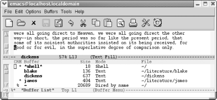
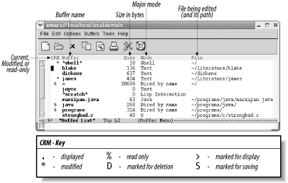

{% include JB/setup %}
{% raw %}
<div>
<div class="book" xml:lang="en"><div class="book"><div class="book"><div class="book"><h1 class="title"><a id="gnu3-CHP-4-SECT-5" class="calibre1"></a>More About Buffers</h1></div></div></div><p class="copyright">In this section, we'll learn about saving multiple
buffers, renaming buffers, read-only buffers, and operations you can
do with the buffer list—not only a useful tool but a good
introduction to the principles you'll encounter in
the directory editor, Dired, covered in <a class="calibre2" href="ch05.html" title="Chapter 5. Emacs as a Work Environment">Chapter 5</a>.</p><div class="book" xml:lang="en"><div class="book"><div class="book"><div class="book"><h2 class="title1"><a id="gnu3-CHP-4-SECT-5.1" class="calibre1"></a>Saving Multiple Buffers</h2></div></div></div><p class="copyright">You know about saving buffers
<a id="gnu3-CHP-4-ITERM-2041" class="calibre2"></a>
               <a id="gnu3-CHP-4-ITERM-2042" class="calibre2"></a>
               <a id="gnu3-CHP-4-ITERM-2043" class="calibre2"></a>individually
by typing <span><strong class="calibre5">C-x C-s</strong></span>. Once
you're using multiple buffers, you should also know
that you can save them all at once by typing <span><strong class="calibre5">C-x s</strong></span> (for <span><strong class="calibre5">save-some-buffers</strong></span>). Emacs asks you if you want
to save each buffer that is connected with a file (it
doesn't offer to save new buffers
you've created but have not associated with a file
and, of course, it doesn't save its own internal
buffers). For each buffer, you can answer <span><strong class="calibre5">y</strong></span> to save it or <span><strong class="calibre5">n</strong></span> not to. You can also type <span><strong class="calibre5">!</strong></span> to save all the buffers without asking. If
you want to save this buffer and no more, type a period (.). If you want to cancel the command and not
save the current buffer, press <span><strong class="calibre5">q</strong></span> (of
course, any buffers you saved before pressing <span><strong class="calibre5">q</strong></span> are already saved; <span><strong class="calibre5">q</strong></span> does not undo those). You may want to look
at the buffer before deciding whether to save it; if so, type
<span><strong class="calibre5">C-r</strong></span>. Emacs enters view mode,
allowing you to look at the buffer but not make changes. Press
<span><strong class="calibre5">q</strong></span> to exit view mode and continue
saving buffers.</p></div><div class="book" xml:lang="en"><div class="book"><div class="book"><div class="book"><h2 class="title1"><a id="gnu3-CHP-4-SECT-5.2" class="calibre1"></a>Renaming Buffers</h2></div></div></div><p class="copyright">When you are editing a file,
<a id="gnu3-CHP-4-ITERM-2044" class="calibre2"></a>
               <a id="gnu3-CHP-4-ITERM-2045" class="calibre2"></a>
               <a id="gnu3-CHP-4-ITERM-2046" class="calibre2"></a>the buffer takes on the name of the
file. If you have long filenames, you may find it convenient to
rename buffers to shorter names (this renaming
doesn't affect the filename, just the buffer name).
This feature is mostly useful on versions of Emacs that
don't offer good completion capabilities; in GNU
Emacs, whenever you have to type a buffer name, you just type the
first few unique letters and press <span><strong class="calibre5">Tab</strong></span> to have Emacs complete the name for you.
In some circumstances, you may want to rename buffers.</p><p class="copyright">To rename a buffer, type <span><strong class="calibre5">M-x
rename-buffer</strong></span>. Emacs asks for the new name; type it and
press <span><strong class="calibre5">Enter</strong></span>. The new name is
displayed on the mode line. Renaming buffers comes in particularly
handy in shell mode, described in <a class="calibre2" href="ch05.html" title="Chapter 5. Emacs as a Work Environment">Chapter 5</a>.
You start one command shell, and then rename the buffer and start
another, in this way running as many shells as you have use for
simultaneously.</p><p class="copyright">As mentioned earlier, in GNU Emacs only the buffer name is displayed
on the mode line, rather than the buffer name
<a id="gnu3-CHP-4-ITERM-2047" class="calibre2"></a>
               <a id="gnu3-CHP-4-ITERM-2048" class="calibre2"></a>and the filename. Even if you rename a
buffer that contains a file, Emacs remembers the connection between
buffer and file, which you can see if you save the file (<span><strong class="calibre5">C-x C-s</strong></span>) or display the buffer list (described
later in the chapter).</p><p class="copyright">What if you have two buffers
<a id="gnu3-CHP-4-ITERM-2049" class="calibre2"></a>
               <a id="gnu3-CHP-4-ITERM-2050" class="calibre2"></a>with the same name? Let's
say you are editing a file called <span><em class="calibre7">outline</em></span> from
your home directory and another file called
<span><em class="calibre7">outline</em></span> from one of your subdirectories. Both
buffers are called <code class="calibre21">outline</code>, but Emacs
differentiates them by appending <code class="calibre21">&lt;2&gt;</code> to the
name of the second buffer. (You can tell which is which by looking at
the buffer list, discussed later in this chapter.) Emacs offers an
option that adds a directory to buffers in this situation: select Use
Directory in Buffer Names from the Options menu.
Let's say you've turned on this
option and are editing a file called <span><em class="calibre7">.localized</em></span>;
Emacs will call this buffer simply <code class="calibre21">.localized</code>. Now
you find a second file of the same name from a subdirectory. Instead
of calling this buffer <code class="calibre21">.localized&lt;2&gt;</code>, Emacs
names the buffer
<span><em class="calibre7">directory</em></span>
               <code class="calibre21">/.localized</code>, making
it easy for you to tell the buffers apart at a glance. This option
has some limitations. It shows only the parent directory, not the
full path, and it shows directory names only if multiple buffers have
the same name. We wish it would go a bit further and provide the
option of including the directory on the mode line for all buffers.</p><p class="copyright">One word of advice: if you have a lot of buffers with names like
<code class="calibre21">proposal</code>, <code class="calibre21">proposal</code>
               <code class="calibre21">&lt;2&gt;</code>, and
<code class="calibre21">proposal&lt;3&gt;</code> around, you're
probably forgetting to edit the directory when you ask for a file. If
you try to find a file but get the directory wrong, Emacs assumes you
want to start a new file. For example, let's say you
want to edit the file <span><em class="calibre7">~/work/proposal</em></span>, but
instead ask for the file <span><em class="calibre7">~/novel/proposal</em></span>. Since
<span><em class="calibre7">~/novel/proposal</em></span> doesn't exist,
Emacs creates a new, empty buffer named <code class="calibre21">proposal</code>.
If you correct your mistake (<span><strong class="calibre5">C-x C-f
~/work/proposal</strong></span>), Emacs renames your buffers accordingly:
your empty buffer <code class="calibre21">proposal</code> is associated with
<span><em class="calibre7">~/novel/proposal</em></span>; the buffer you want is named
<code class="calibre21">proposal&lt;2&gt;</code>.</p><p class="copyright">Here's a hint for dealing with the very common
mistake of finding the wrong file. If you notice that
you've found the wrong file with <span><strong class="calibre5">C-x C-f</strong></span>, use <span><strong class="calibre5">C-x
C-v</strong></span> to replace it with the one you want. <span><strong class="calibre5">C-x C-v</strong></span> finds a file, but instead of making a
new buffer, it replaces the file in the current buffer. It means
"get me the file I really meant to find instead of
this one." Using this command circumvents the
problem of having unnecessary numbered buffers (i.e.,
<code class="calibre21">proposal</code>, <code class="calibre21">proposal&lt;2&gt;</code>,
and so on) lying around.</p></div><div class="book" xml:lang="en"><div class="book"><div class="book"><div class="book"><h2 class="title1"><a id="gnu3-CHP-4-SECT-5.3" class="calibre1"></a>Read-Only Buffers</h2></div></div></div><p class="copyright">While you're working,
<a id="gnu3-CHP-4-ITERM-2051" class="calibre2"></a>
               <a id="gnu3-CHP-4-ITERM-2052" class="calibre2"></a>you may need to read some file that you
don't want to change: you just want to browse
through it and look at its contents. Of course, it is easy to touch
the keyboard accidentally and make spurious modifications.
We've discussed several ways to restore the original
file, but it would be better to prevent this from happening at all.
How?</p><p class="copyright">You can make any buffer read-only by pressing <span><strong class="calibre5">C-x C-q</strong></span>. Try this on a practice buffer and
you'll notice that <a id="gnu3-CHP-4-ITERM-2053" class="calibre2"></a>
               <a id="gnu3-CHP-4-ITERM-2054" class="calibre2"></a>two percent signs
(<code class="calibre21">%%</code>) appear on the left side of the mode line, in
the same place where <a id="gnu3-CHP-4-ITERM-2055" class="calibre2"></a>
               <a id="gnu3-CHP-4-ITERM-2056" class="calibre2"></a>asterisks (<code class="calibre21">**</code>)
appear if you've changed a buffer. The percent signs
indicate that the buffer is read-only.<sup class="calibre6">[<a id="gnu3-CHP-4-FNOTE-1" href="#ftn.gnu3-CHP-4-FNOTE-1" class="calibre2">1</a>]</sup> If
you try to type in a read-only buffer, Emacs just beeps at you and
displays an error message (<code class="calibre21">Buffer is read-only</code>) in
the minibuffer. What happens when you change your mind and want to
start editing the read-only buffer again? Just type <span><strong class="calibre5">C-x C-q</strong></span> again. This command toggles the
buffer's read-only status—that is, typing
<span><strong class="calibre5">C-x C-q</strong></span> repeatedly makes the buffer
alternate between read-only and read-write.</p><p class="copyright">Of course, toggling read-only <a id="gnu3-CHP-4-ITERM-2057" class="calibre2"></a>
               <a id="gnu3-CHP-4-ITERM-2058" class="calibre2"></a>status doesn't change
the permissions on a file. If you are editing a buffer containing
someone else's file, <span><strong class="calibre5">C-x
C-q</strong></span> does not change the read-only status. One way to edit
someone else's file is to make a copy of your own
using the <span><strong class="calibre5">write-file</strong></span> command, and
then make changes. Let's say you want to change a
proposal that is owned by someone else. Read the file, write the file
as one you own using <span><strong class="calibre5">C-x C-w</strong></span>, then
change it from read-only to writable status by pressing <span><strong class="calibre5">C-x C-q</strong></span>. None of this, of course, modifies the
original file; it just gives you a copy to work with. If you want to
move a minor amount of text from a read-only file to another, you can
mark the text then press <span><strong class="calibre5">M-w</strong></span> to copy
it. Move to the place you want to put the text and press <span><strong class="calibre5">C-y</strong></span> to paste it.</p><p class="copyright">You can open a file as read-only in a new window by typing <span><strong class="calibre5">C-x 4 r</strong></span> or in a new frame by typing <span><strong class="calibre5">C-x 5 r</strong></span>. This is one of a number of commands
in which <span><em class="calibre7">4</em></span> means window and
<span><em class="calibre7">5</em></span> means frame.</p></div><div class="book" xml:lang="en"><div class="book"><div class="book"><div class="book"><h2 class="title1"><a id="gnu3-CHP-4-SECT-5.4" class="calibre1"></a>Getting a List of Buffers</h2></div></div></div><p class="copyright">Because you can create an unlimited
<a id="gnu3-CHP-4-ITERM-2059" class="calibre2"></a>
               <a id="gnu3-CHP-4-ITERM-2060" class="calibre2"></a>number
of buffers in an Emacs session, you can have so many buffers going
that you can't remember them all. At any point, you
can get a list of your buffers (yes, we know you know how to do that
by holding down <span><strong class="calibre5">Ctrl</strong></span> and clicking
the left mouse button, but this is a little different). This list
provides you with important information—for example, whether
you've changed the buffer since you last saved it.</p><p class="copyright">If you press <span><strong class="calibre5">C-x C-b</strong></span>, Emacs lists
your buffers. It creates a new <code class="calibre21">*Buffer List*</code>
window on the screen, which shows you all the buffers.</p><div class="book"><a id="ch04-15-fm2xml" class="calibre2"></a><table class="calibre8"><colgroup class="calibre9"><col class="calibre10"/></colgroup><tbody class="calibre15"><tr class="calibre12"><td class="calibre17">
                           <p class="copyright">Type: <span><strong class="calibre5">C-x C-b</strong></span>
                           </p>
                        </td></tr><tr class="calibre12"><td class="calibre17">
                           <p class="copyright">
                              </p><div class="book"><div class="mediaobject"><a id="I_4_tt126" class="calibre2"></a></div></div><p class="copyright">
                           </p>
                        </td></tr><tr class="calibre12"><td class="calibre19">
                           <p class="copyright">Emacs displays a list of buffers.</p>
                        </td></tr></tbody></table></div><p class="copyright">You can use this list as an informational display
("these are my buffers") or you can
actually work with buffers from this list,
as<a id="gnu3-CHP-4-ITERM-2061" class="calibre2"></a>
               <a id="gnu3-CHP-4-ITERM-2062" class="calibre2"></a>
               <a id="gnu3-CHP-4-ITERM-2063" class="calibre2"></a> covered in the next section.</p><p class="copyright">
               <a class="calibre2" href="ch04s05.html#gnu3-CHP-4-FIG-3" title="Figure 4-3. Understanding the buffer list">Figure 4-3</a> shows what each of the symbols in the
buffer list means.</p><div class="figure"><a id="gnu3-CHP-4-FIG-3" class="calibre2"></a><div class="figure-contents"><div class="mediaobject"><a id="I_4_tt127" class="calibre2"></a></div></div><p class="title3"><b class="calibre25">Figure 4-3. Understanding the buffer list</b></p></div><br class="book"/></div><div class="book" xml:lang="en"><div class="book"><div class="book"><div class="book"><h2 class="title1"><a id="gnu3-CHP-4-SECT-5.5" class="calibre1"></a>Working with the Buffer List</h2></div></div></div><p class="copyright">The buffer list is more than a display. From the buffer list, you can
display, delete, and save buffers. To move to the buffer
<a id="gnu3-CHP-4-ITERM-2064" class="calibre2"></a>
               <a id="gnu3-CHP-4-ITERM-2065" class="calibre2"></a>
               <a id="gnu3-CHP-4-ITERM-2066" class="calibre2"></a>
               <a id="gnu3-CHP-4-ITERM-2067" class="calibre2"></a>list window, type <span><strong class="calibre5">C-x o</strong></span>. Emacs puts the cursor in the first
column. For a particular buffer, press <span><strong class="calibre5">n</strong></span>
or <span><strong class="calibre5">C-n</strong></span> to move down a
line or <span><strong class="calibre5">p</strong></span> or <span><strong class="calibre5">C-p</strong></span> to move up a line. You can also press
<span><strong class="calibre5">Space</strong></span> to move down to the next line
and <span><strong class="calibre5">Del</strong></span> to move up. (The up and down
arrow keys work, too.) This array of up and down choices may seem
confusing, but multiple bindings are given to make it easy to move up
and down without consulting a book like this one.</p><p class="copyright">You use a set of one-character commands to work with the buffers that
are listed. To delete a buffer, go to the line for the buffer you
want to delete and type <span><strong class="calibre5">d</strong></span> or
<span><strong class="calibre5">k</strong></span>. The letter <code class="calibre21">D</code>
appears in the first column. You can mark as many buffers for
deletion as you want to. The buffers aren't deleted
immediately; when you're finished marking buffers,
press <span><strong class="calibre5">x</strong></span> (which stands for
"execute") to delete them. If any
of the buffers you want to delete are connected with files, Emacs
asks if you want to save the changes before doing anything. (Note
that it does not ask you about buffers that aren't
connected with files, so be sure to save any that you want before
deleting them.)</p><p class="copyright">If you change your mind about deleting a buffer before typing
<span><strong class="calibre5">x</strong></span>, you can unmark the buffer by
going to the appropriate line and typing <span><strong class="calibre5">u</strong></span>. As a convenience, the <span><strong class="calibre5">Del</strong></span> key also unmarks the previous buffer in
the list. Why would you do this? Simple: <span><strong class="calibre5">d</strong></span> automatically moves you down one line. If
you mark a file for deletion and immediately change your mind, you
can press a single <span><strong class="calibre5">Del</strong></span> rather than
moving to the previous line and typing <span><strong class="calibre5">u</strong></span> for <span><em class="calibre7">unmark</em></span>).</p><p class="copyright">To save a buffer, go to the line for <a id="gnu3-CHP-4-ITERM-2068" class="calibre2"></a>
               <a id="gnu3-CHP-4-ITERM-2069" class="calibre2"></a>
               <a id="gnu3-CHP-4-ITERM-2070" class="calibre2"></a>
               <a id="gnu3-CHP-4-ITERM-2071" class="calibre2"></a>the buffer you want to save and press
<span><strong class="calibre5">s</strong></span>. The letter <code class="calibre21">S</code>
appears in the first column. Press <span><strong class="calibre5">x</strong></span>
when you really want to save the buffer. Therefore, you can look at
the buffer list, choose which buffers you want to delete and which
you want to save, and then type <span><strong class="calibre5">x</strong></span> to
do everything at once. Again, you can press <span><strong class="calibre5">u</strong></span> or <span><strong class="calibre5">Del</strong></span> to
cancel saves if you change your mind.</p><p class="copyright">One command that affects a buffer
<a id="gnu3-CHP-4-ITERM-2072" class="calibre2"></a>
               <a id="gnu3-CHP-4-ITERM-2073" class="calibre2"></a>
               <a id="gnu3-CHP-4-ITERM-2074" class="calibre2"></a>immediately when you type it is tilde
(<span><strong class="calibre5">~</strong></span>). Typing <span><strong class="calibre5">~</strong></span> marks a buffer as unmodified. In effect,
this symbol tells Emacs not to save changes automatically (since the
buffer is unmodified, Emacs has no reason to save changes with its
auto-save feature). Of course, if you have made changes, the changes
are still in the buffer; it's just that
you're in essence
"lying" to Emacs to say that no
changes have been made. Also, if you change the buffer again after
marking it unmodified, Emacs once again knows it has been modified
and saves it automatically in a backup file. The backup filename (not
coincidentally) has the format <span><em class="calibre7">filename~</em></span>.</p><p class="copyright">You can change a buffer's status from
<a id="gnu3-CHP-4-ITERM-2075" class="calibre2"></a>
               <a id="gnu3-CHP-4-ITERM-2076" class="calibre2"></a>read-write to read-only and back again
by pressing <span><strong class="calibre5">%</strong></span>. Pressing <span><strong class="calibre5">%</strong></span> changes the buffer's status
immediately. Percentage signs appear on the mode line when a buffer
is read-only. When you are editing, you can toggle a buffer between
read-write and read-only by pressing <span><strong class="calibre5">C-x
C-q</strong></span>, as we discussed earlier.</p><p class="copyright">You can also use the buffer list to display multiple buffers in
windows. To display one of the buffers in a full screen, move the
cursor into the buffer list's window; use <span><strong class="calibre5">C-n</strong></span> and <span><strong class="calibre5">C-p</strong></span>
to move to the line for the buffer that you want, and press <span><strong class="calibre5">1</strong></span> (the number one). Emacs displays the buffer
in a full-screen window.</p><p class="copyright">If you want to display one of the buffers in place of the buffer
list, you can press <span><strong class="calibre5">f</strong></span>. To put a
buffer in another window (i.e., one not occupied by the buffer list),
type <span><strong class="calibre5">o</strong></span>. Emacs displays the buffer in
the other window and puts the cursor there. Pressing <span><strong class="calibre5">C-o</strong></span> has a slightly different result; Emacs
displays the buffer in another window but doesn't
put the cursor there.</p><p class="copyright">One final buffer display command remains. You can ask Emacs to
display multiple buffers and have Emacs
<a id="gnu3-CHP-4-ITERM-2077" class="calibre2"></a>
               <a id="gnu3-CHP-4-ITERM-2078" class="calibre2"></a>create
windows for them dynamically. To select buffers to be displayed in
windows, press <span><strong class="calibre5">m</strong></span> (for
<span><em class="calibre7">mark</em></span>) next to the buffers you want. Emacs
displays a <span><strong class="calibre5">&gt;</strong></span> next to the buffers
you mark with <span><strong class="calibre5">m</strong></span>. To tell Emacs to
display the buffers you've marked, press <span><strong class="calibre5">v</strong></span>. Emacs makes horizontal windows to display
the buffers you've chosen.</p><p class="copyright">To get rid of the <code class="calibre21">*Buffer List*</code> window, type
<span><strong class="calibre5">C-x 0</strong></span> if you are in the buffer list
window or <span><strong class="calibre5">C-x 1</strong></span> (the number one) if
you are in another window. <a class="calibre2" href="ch04s05.html#gnu3-CHP-4-TABLE-2" title="Table 4-2. Buffer manipulation commands">Table 4-2</a> shows a
summary of buffer manipulation
<a id="gnu3-CHP-4-ITERM-2079" class="calibre2"></a>
               <a id="gnu3-CHP-4-ITERM-2080" class="calibre2"></a>commands.</p><div class="book"><a id="gnu3-CHP-4-TABLE-2" class="calibre2"></a><p class="title2"><b class="calibre25">Table 4-2. Buffer manipulation commands</b></p><div class="table-contents"><table summary="Buffer manipulation commands" class="calibre8"><colgroup class="calibre9"><col class="calibre10"/><col class="calibre10"/><col class="calibre10"/></colgroup><thead class="calibre11"><tr class="calibre12"><th class="calibre26">
                           <p class="copyright">
                              <span><strong class="calibre5">Keystrokes</strong></span>
                           </p>
                        </th><th class="calibre26">
                           <p class="copyright">
                              <span><strong class="calibre5">Command name</strong></span>
                           </p>
                        </th><th class="calibre27">
                           <p class="copyright">
                              <span><strong class="calibre5">Action</strong></span>
                           </p>
                        </th></tr></thead><tbody class="calibre15"><tr class="calibre12"><td class="calibre28">
                           <p class="copyright">
                              <span><strong class="calibre5">C-x b</strong></span>
                              <span><em class="calibre7">Buffers</em></span>
                              <span>→</span> 
                              <span><em class="calibre7">Select Named Buffer</em></span>
                           </p>
                        </td><td class="calibre28">
                           <p class="copyright">
                              <span><strong class="calibre5">switch-to-buffer</strong></span>
                           </p>
                        </td><td class="calibre29">
                           <p class="copyright">Move to the buffer specified.</p>
                        </td></tr><tr class="calibre12"><td class="calibre28">
                           <p class="copyright">
                              <span><strong class="calibre5">C-x</strong></span> 
                              <span>→</span> 
                              <span><em class="calibre7">Buffers</em></span> 
                              <span>→</span>
                              <span><em class="calibre7">Next Buffer</em></span>
                           </p>
                        </td><td class="calibre28">
                           <p class="copyright">
                              <span><strong class="calibre5">next-buffer</strong></span>
                           </p>
                        </td><td class="calibre29">
                           <p class="copyright">Move to the next buffer in the buffer list.</p>
                        </td></tr><tr class="calibre12"><td class="calibre28">
                           <p class="copyright">
                              <span><strong class="calibre5">C-x</strong></span> 
                              <span><em class="calibre7">Buffers</em></span> 
                              <span>→</span>
                              <span><em class="calibre7">Previous Buffer</em></span>
                           </p>
                        </td><td class="calibre28">
                           <p class="copyright">
                              <span><strong class="calibre5">previous-buffer</strong></span>
                           </p>
                        </td><td class="calibre29">
                           <p class="copyright">Move to the previous buffer in the buffer list.</p>
                        </td></tr><tr class="calibre12"><td class="calibre28">
                           <p class="copyright">
                              <span><strong class="calibre5">C-x C-b</strong></span>
                              <span><em class="calibre7">Buffers</em></span>
                              <span>→</span> 
                              <span><em class="calibre7">List All Buffers</em></span>
                           </p>
                        </td><td class="calibre28">
                           <p class="copyright">
                              <span><strong class="calibre5">list-buffers</strong></span>
                           </p>
                        </td><td class="calibre29">
                           <p class="copyright">Display the buffer list.</p>
                        </td></tr><tr class="calibre12"><td class="calibre28">
                           <p class="copyright">
                              <span><strong class="calibre5">C-x k</strong></span>
                           </p>
                        </td><td class="calibre28">
                           <p class="copyright">
                              <span><strong class="calibre5">kill-buffer</strong></span>
                           </p>
                        </td><td class="calibre29">
                           <p class="copyright">Delete the buffer specified.</p>
                        </td></tr><tr class="calibre12"><td class="calibre28">
                           <p class="copyright">
                              <span><em class="calibre7">(none)</em></span>
                           </p>
                        </td><td class="calibre28">
                           <p class="copyright">
                              <span><strong class="calibre5">kill-some-buffers</strong></span>
                           </p>
                        </td><td class="calibre29">
                           <p class="copyright">Ask about deleting each buffer.</p>
                        </td></tr><tr class="calibre12"><td class="calibre28">
                           <p class="copyright">
                              <span><em class="calibre7">(none)</em></span>
                           </p>
                        </td><td class="calibre28">
                           <p class="copyright">
                              <span><strong class="calibre5">rename-buffer</strong></span>
                           </p>
                        </td><td class="calibre29">
                           <p class="copyright">Change the buffer's name to the name specified.</p>
                        </td></tr><tr class="calibre12"><td class="calibre30">
                           <p class="copyright">
                              <span><strong class="calibre5">C-x s</strong></span>
                           </p>
                        </td><td class="calibre30">
                           <p class="copyright">
                              <span><strong class="calibre5">save-some-buffers</strong></span>
                           </p>
                        </td><td class="calibre31">
                           <p class="copyright">Ask whether you want to save each modified buffer.</p>
                        </td></tr></tbody></table></div></div><br class="book"/><p class="copyright">
               <a class="calibre2" href="ch04s05.html#gnu3-CHP-4-TABLE-3" title="Table 4-3. Buffer list commands">Table 4-3</a> summarizes the commands for working with
<a id="gnu3-CHP-4-ITERM-2081" class="calibre2"></a>
               <a id="gnu3-CHP-4-ITERM-2082" class="calibre2"></a>the buffer list.</p><div class="book"><a id="gnu3-CHP-4-TABLE-3" class="calibre2"></a><p class="title2"><b class="calibre25">Table 4-3. Buffer list commands</b></p><div class="table-contents"><table summary="Buffer list commands" class="calibre8"><colgroup class="calibre9"><col class="calibre10"/><col class="calibre10"/><col class="calibre10"/></colgroup><thead class="calibre11"><tr class="calibre12"><th class="calibre26">
                           <p class="copyright">
                              <span><strong class="calibre5">Keystrokes</strong></span>
                           </p>
                        </th><th class="calibre26">
                           <p class="copyright">
                              <span><strong class="calibre5">Action</strong></span>
                           </p>
                        </th><th class="calibre27">
                           <p class="copyright">
                              <span><strong class="calibre5">Occurs</strong></span>
                           </p>
                        </th></tr></thead><tbody class="calibre15"><tr class="calibre12"><td class="calibre28">
                           <p class="copyright">
                              <span><strong class="calibre5">C-n</strong></span>,
<span><strong class="calibre5">Space</strong></span>, <span><strong class="calibre5">n</strong></span>, or</p>
                        </td><td class="calibre28">
                           <p class="copyright">Move to the next buffer in the list (i.e., down one line).</p>
                        </td><td class="calibre29">
                           <p class="copyright">Immediately</p>
                        </td></tr><tr class="calibre12"><td class="calibre28">
                           <p class="copyright">
                              <span><strong class="calibre5">C-p</strong></span>,
<span><strong class="calibre5">p</strong></span>, or</p>
                        </td><td class="calibre28">
                           <p class="copyright">Move to the previous buffer in the list (i.e., up one line).</p>
                        </td><td class="calibre29">
                           <p class="copyright">Immediately</p>
                        </td></tr><tr class="calibre12"><td class="calibre28">
                           <p class="copyright">
                              <span><strong class="calibre5">d</strong></span>
                           </p>
                        </td><td class="calibre28">
                           <p class="copyright">Mark buffer for deletion.</p>
                        </td><td class="calibre29">
                           <p class="copyright">When you press <span><strong class="calibre5">x</strong></span>
                           </p>
                        </td></tr><tr class="calibre12"><td class="calibre28">
                           <p class="copyright">
                              <span><strong class="calibre5">k</strong></span>
                           </p>
                        </td><td class="calibre28">
                           <p class="copyright">Mark buffer for deletion.</p>
                        </td><td class="calibre29">
                           <p class="copyright">When you press <span><strong class="calibre5">x</strong></span>
                           </p>
                        </td></tr><tr class="calibre12"><td class="calibre28">
                           <p class="copyright">
                              <span><strong class="calibre5">s</strong></span>
                           </p>
                        </td><td class="calibre28">
                           <p class="copyright">Save buffer.</p>
                        </td><td class="calibre29">
                           <p class="copyright">When you press <span><strong class="calibre5">x</strong></span>
                           </p>
                        </td></tr><tr class="calibre12"><td class="calibre28">
                           <p class="copyright">
                              <span><strong class="calibre5">u</strong></span>
                           </p>
                        </td><td class="calibre28">
                           <p class="copyright">Unmark buffer.</p>
                        </td><td class="calibre29">
                           <p class="copyright">Immediately</p>
                        </td></tr><tr class="calibre12"><td class="calibre28">
                           <p class="copyright">
                              <span><strong class="calibre5">x</strong></span>
                           </p>
                        </td><td class="calibre28">
                           <p class="copyright">Execute other one-letter commands on all marked buffers.</p>
                        </td><td class="calibre29">
                           <p class="copyright">Immediately</p>
                        </td></tr><tr class="calibre12"><td class="calibre28">
                           <p class="copyright">
                              <span><strong class="calibre5">Del</strong></span>
                           </p>
                        </td><td class="calibre28">
                           <p class="copyright">Unmark the previous buffer in the list; if there is no mark, move up
one line.</p>
                        </td><td class="calibre29">
                           <p class="copyright">Immediately</p>
                        </td></tr><tr class="calibre12"><td class="calibre28">
                           <p class="copyright">
                              <span><strong class="calibre5">~</strong></span>
                           </p>
                        </td><td class="calibre28">
                           <p class="copyright">Mark buffer as unmodified.</p>
                        </td><td class="calibre29">
                           <p class="copyright">Immediately</p>
                        </td></tr><tr class="calibre12"><td class="calibre28">
                           <p class="copyright">
                              <span><strong class="calibre5">%</strong></span>
                           </p>
                        </td><td class="calibre28">
                           <p class="copyright">Toggle read-only status of buffer.</p>
                        </td><td class="calibre29">
                           <p class="copyright">Immediately</p>
                        </td></tr><tr class="calibre12"><td class="calibre28">
                           <p class="copyright">
                              <span><strong class="calibre5">1</strong></span>
                           </p>
                        </td><td class="calibre28">
                           <p class="copyright">Display buffer in a full screen.</p>
                        </td><td class="calibre29">
                           <p class="copyright">Immediately</p>
                        </td></tr><tr class="calibre12"><td class="calibre28">
                           <p class="copyright">
                              <span><strong class="calibre5">2</strong></span>
                           </p>
                        </td><td class="calibre28">
                           <p class="copyright">Display this buffer and the next one in horizontal windows.</p>
                        </td><td class="calibre29">
                           <p class="copyright">Immediately</p>
                        </td></tr><tr class="calibre12"><td class="calibre28">
                           <p class="copyright">
                              <span><strong class="calibre5">f</strong></span>
                           </p>
                        </td><td class="calibre28">
                           <p class="copyright">Replace buffer list with this buffer.</p>
                        </td><td class="calibre29">
                           <p class="copyright">Immediately</p>
                        </td></tr><tr class="calibre12"><td class="calibre28">
                           <p class="copyright">
                              <span><strong class="calibre5">o</strong></span>
                           </p>
                        </td><td class="calibre28">
                           <p class="copyright">Replace other window with this buffer.</p>
                        </td><td class="calibre29">
                           <p class="copyright">Immediately</p>
                        </td></tr><tr class="calibre12"><td class="calibre28">
                           <p class="copyright">
                              <span><strong class="calibre5">m</strong></span>
                           </p>
                        </td><td class="calibre28">
                           <p class="copyright">Mark buffers to be displayed in windows.</p>
                        </td><td class="calibre29">
                           <p class="copyright">When you press <span><strong class="calibre5">v</strong></span>
                           </p>
                        </td></tr><tr class="calibre12"><td class="calibre28">
                           <p class="copyright">
                              <span><strong class="calibre5">v</strong></span>
                           </p>
                        </td><td class="calibre28">
                           <p class="copyright">Display buffers marked with <span><strong class="calibre5">m</strong></span>; Emacs
makes as many windows as needed.</p>
                        </td><td class="calibre29">
                           <p class="copyright">Immediately</p>
                        </td></tr><tr class="calibre12"><td class="calibre30">
                           <p class="copyright">
                              <span><strong class="calibre5">q</strong></span>
                           </p>
                        </td><td class="calibre30">
                           <p class="copyright">Quit buffer list.</p>
                        </td><td class="calibre31">
                           <p class="copyright">Immediately</p>
                        </td></tr></tbody></table></div></div><br class="book"/></div><div class="book"><br class="book"/><hr class="calibre4"/><div class="book"><p class="copyright"><sup class="calibre6">[<a id="ftn.gnu3-CHP-4-FNOTE-1" href="#gnu3-CHP-4-FNOTE-1" class="calibre2">1</a>] </sup>The exception
to the rule that <code class="calibre21">**</code> means changed and
<code class="calibre21">%%</code> means read-only is the
<code class="calibre21">*scratch*</code> buffer. Because Emacs
doesn't warn you if you kill the
<code class="calibre21">*scratch*</code> buffer, even if it is changed, it wants
to give you some indication that there are unsaved changes. Instead
of <code class="calibre21">%%</code>, the <code class="calibre21">*scratch*</code> buffer
puts <code class="calibre21">%*</code> on the mode line.</p></div></div></div></div>

{% endraw %}

